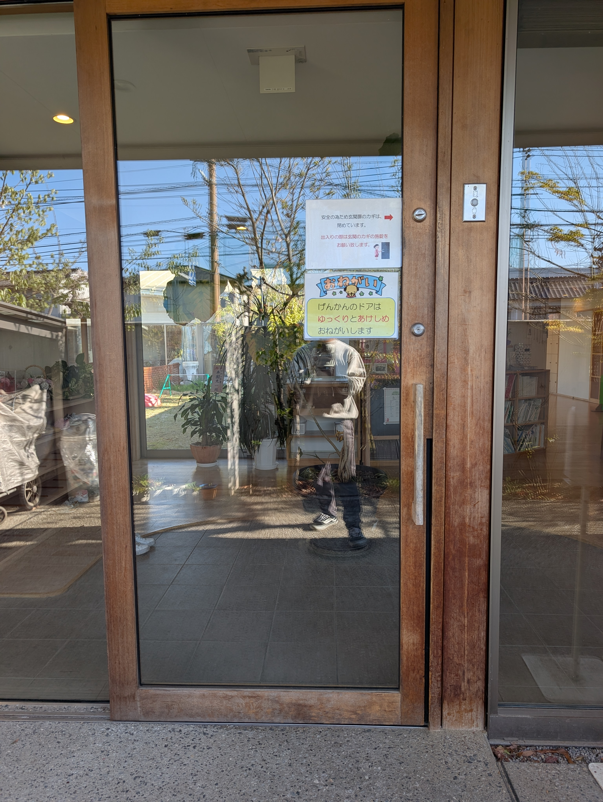
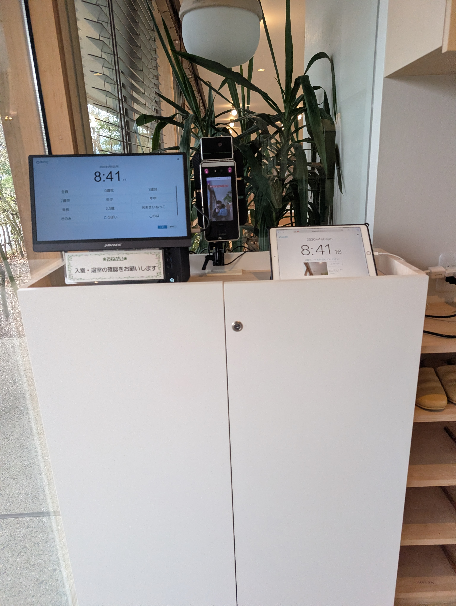
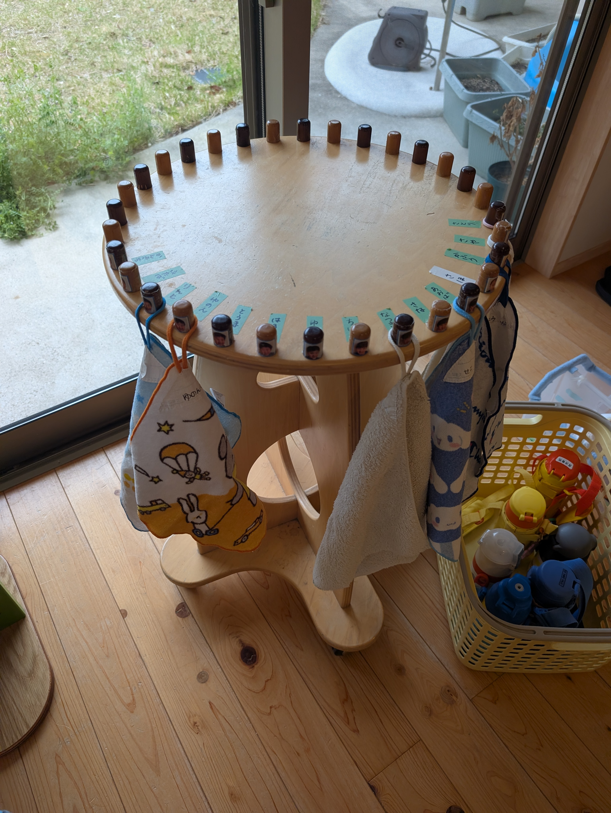
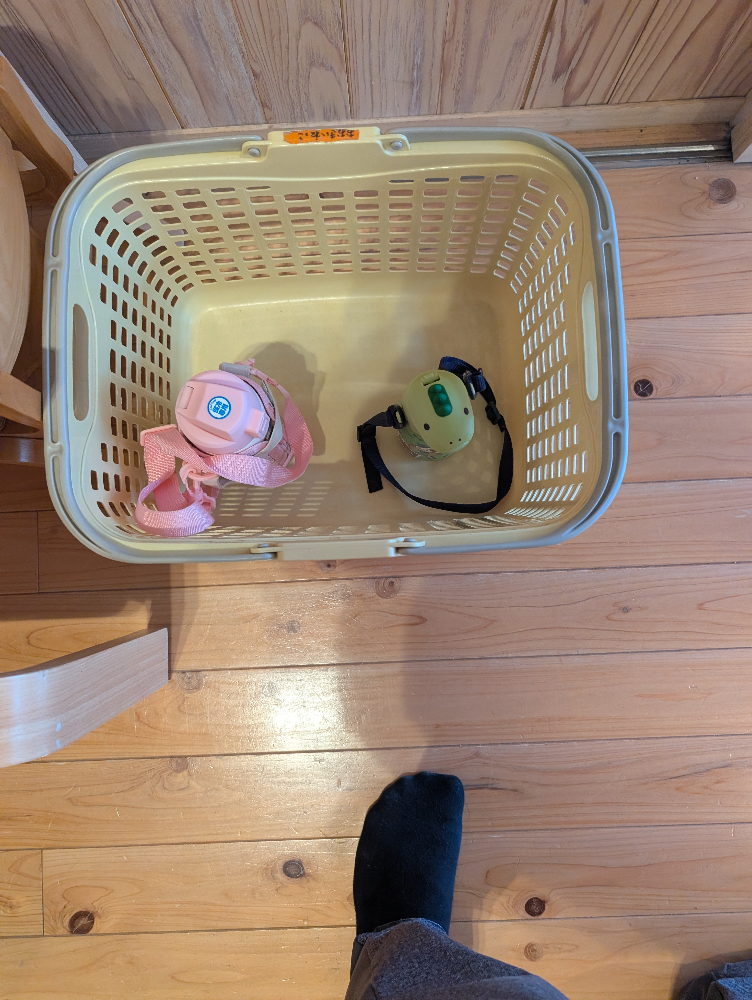
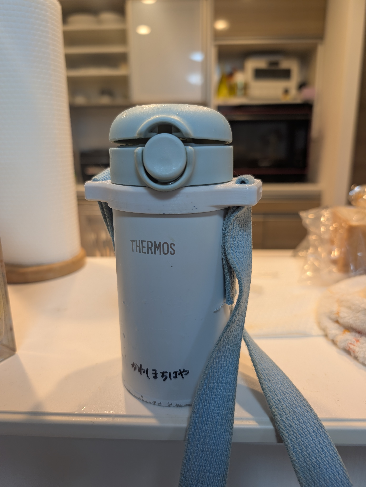
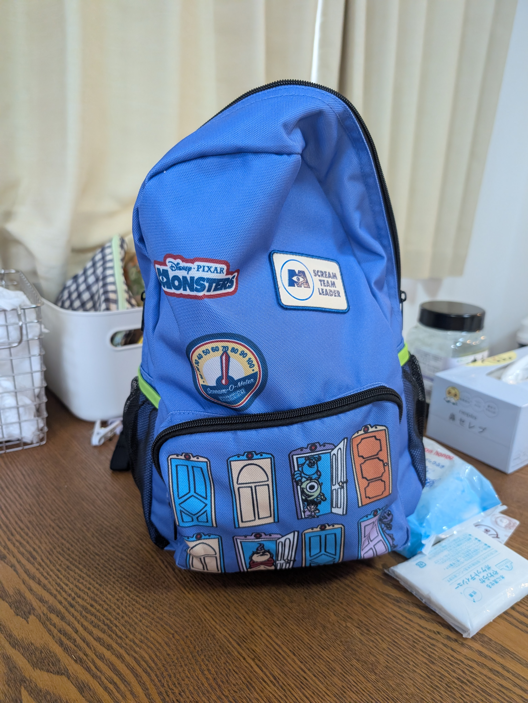
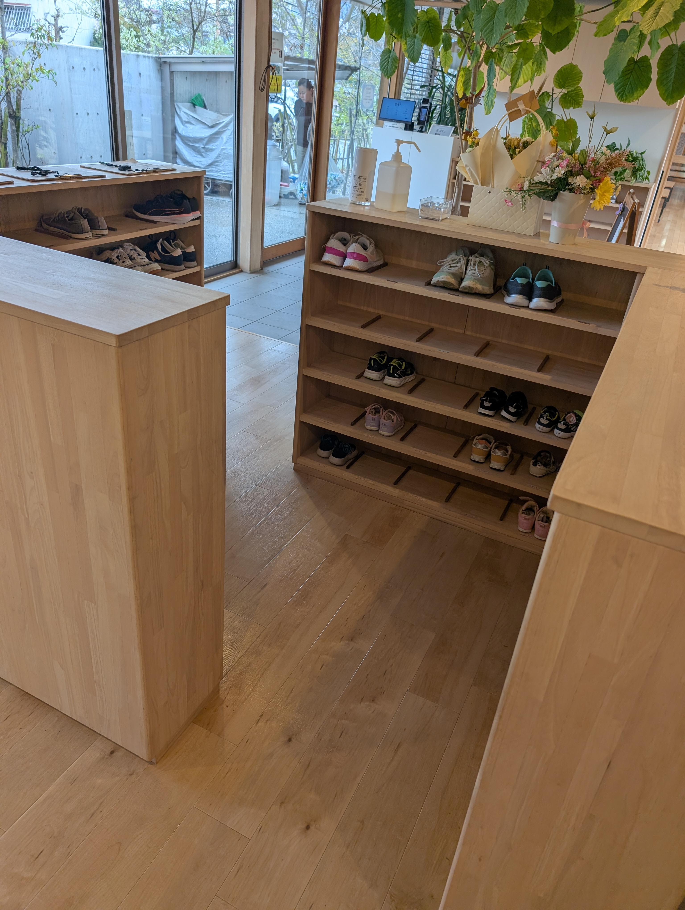
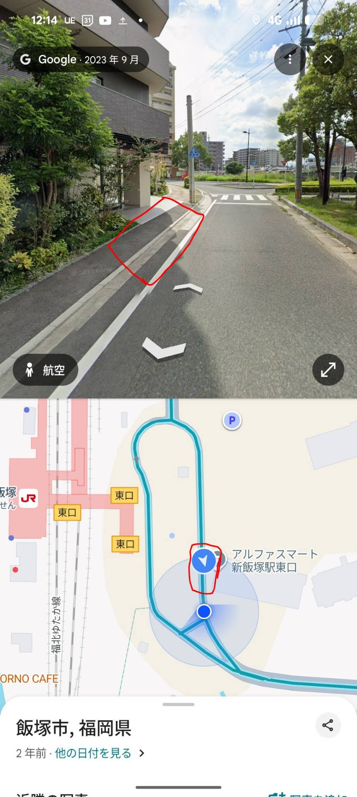

横田保育園 お迎え手順
電話番号：0948-22-1329
住所：〒820-0044 福岡県飯塚市横田351-1
Google Mapで開く
入口と出口が分かれています。
出口：西側（GEO側） ／ 入口：東側（王将側）
間取り図

手順
横田保育園に入る
インターホンを押す必要はありません。お迎えはインターホン不要です。柵の鍵は施錠されていないので、そのまま入れます。

入口の扉は、子供が園から出ないよう上に鍵が掛かっています。閉める時も、内鍵をしてください。

① 入口でPC打刻（図の①）
入口の左側にあるパソコンで、退勤打刻をしてください。
2歳児 → 川島知隼 → 退室

② 知隼をピックアップ（図の②）
ファミサポが来ることを連絡帳に書いているので、「ファミサポです、ちはやくんを迎えに来ました」と言えば大丈夫です。
③ 知隼がいる場所のお手拭きタオルと水筒を取る（図の③）
- お手拭きタオル（知隼がいる場所に掛かっています）

- 水筒（水色のサーモス）
水筒はこのようなカゴの中に入っています。


④ リュックを取る（図の④）
通路側にある知隼のリュックを忘れずに取ってください。
荷物の場所は、顔写真か名前が書いてある場所を見て確認してください。


⑤ 知隼の靴を取る（図の⑤）
帰る前に、知隼の靴（名前が書いてあります）を忘れずに取ってください。

⚠️ 出口はGEO側です。入口（王将側）と間違えないようにご注意ください。
わからないとき
入口右側の事務室スタッフに声をかけてください。
迎え後の流れ
迎えに行ったら、以下に戻ってください。
住所：福岡県飯塚市立岩964-24 アルファスマート新飯塚駅東口801号室
Google Mapで開く
LINEまたは、801をピンポンしてくれたら、エントランスまで降りてきます。
路肩、または駐車場21番に停めてください。
路肩の写真
